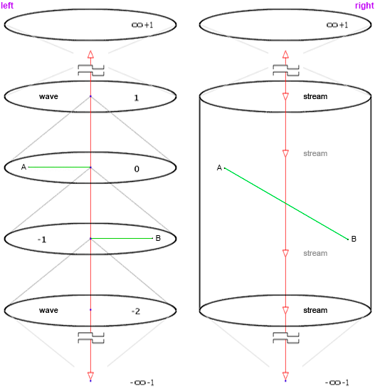

полный текст книги:
Ничто и Точка (предисловие)
Цель
Созерцаемое
Сущность
Сознание
Двухаспектная Сущность
Четвертое измерение и ...
Общество и Человечество
Пятое измерение и ...
Первовозникновение
Акт "Я"
Процесс изучения Акта "Я"
Смысл Бытия
Развитие Сущности
Коллективная реальность
Система развития Сущности
Эхо (отражение)
Реальный аспект Глоб. "Я"
О мировоззрении
Пространство-время
Осношение к Себе
Отношение к своему телу
Лень
Страх
Надежда (Ожидание Чуда)
Адаптация
Тождество личности
Отношение [Рассудок|Тело]
Свобода Воли
Трудная проблема Сознания
Неразличимость и идентичн.
Материя
Гносеология
Эпистемология
Разделение
на главную страницу сайта
— глава девятнадцатая —
————————————————————————————
————————————————————————————
О МИРОВОЗЗРЕНИИ
Самый Первый Вопрос. Он настолько, именно каверзный, активирует Идею отчета перед Обществом, в Себе Самом, скрыто, тайно, необходимо вынуждает иметь Это ввиду. Между тем это без преувеличения Самый Важный Вопрос – волнующий практически* каждого человека в известном нам Мире – на Земле, и задается Этот Вопрос именно так:
Верите ли Вы, что Бог Есть?
Есть одна необходимая сторона данного вопроса, которая может сильно влиять на степень субъективной важности и волнения, трепета, в нем содержащихся. Та сторона, опять же субъективно, наделяет Бога какими-либо качествами. В представлении каждого Он разный, мы сами наделяем Его надуманными свойствами, о которых имеем субъективное представление. Не углубляясь в психологию, для адекват-ного суждения, и для положительного решения в вопросе «Веры в Существование Бога», кроме столь эгоистичного вопроса – «Хочу ли Я чтобы Бог Существовал вообще?», нужно понимание, наделен ли Он той Вездесущностью?, то есть одновременным доступом в мысли и чувства, не говоря о поступках, мнениях и суждениях в адрес других людей. Знает ли Он о Моём отношении ко Мне Самому?
Может ли что-либо быть сокрытым от Бога? – то, о чем Я никому и никогда не говорил. Видит ли Он меня сейчас? Знает ли мои помыслы? Чувствует ли то, что чувствую Я?
На все эти вопросы есть лишь один ответ: «Да, Он Таков», и речь именно о «Реальном аспекте Глобального Я» – так как мы не способны адекватно рассуждать о «Боге Отце» (здесь, мы называем Его «Глобальный аспект Сущности») – Он активен, но абстрактно, в многоликости бесконечной степени, предоставляя* Свое Собственное «Я», каждому живому существу в Мире, в бесконечной Вселенной. Нам доступно только самое общее понимание, но в условиях реальности мы очень ограничены в возможности <знать>;
*Предоставление, «Глобальным аспектом Сущности», Своего Собственного «Я» каждому живому существу во Вселенной, не происходит по Его желанию, то есть намеренно – это Есть Его <Естественная, Системная> особенность возникшая в момент Первовозникновения, это преемственность в фундаментальной относительности [ «Сущность» | «Сознание» ] – Его Природа;
«Реальный аспект Глобального Я» – говоря об Ипостасях называем «Бог Сын», однако, Он является «Собственным Представлением Бога Отца в условиях реальности» и Есть Единственная Самоосозннанная Причина Мира – Живое Существо являющееся Фундаментальным Элементом, и обладающее потенциалом – равным сумме потенциалов всего живого в Мире. Имеет доступ ко всему абсолютно. Его возможности безграничны (Он! ‘Хозяин и Властелин Мира’ – некому Его ограничивать). Допустим, что всё это так, и предположим что по вашему собственному мнению. Каким тогда будет Ваш ответ на Главный вопрос о Боге?
Независимо от ответа, усилим позицию Самого Вопроса: Если сравнить понятия «Верю» и «Знаю», тогда получим значения с разным потенциалом, но – Бог Есть! Всё очень просто: «Чтобы обладать Знанием – надо именно Знать», соответственно этому, квалифицировать Объект данного знания, или можно укрепиться в «Вере» близко к уровню «Знания» – посредством соответственной интерпретации понятий. Но, «Истина – независит от чужих мнений»;
Бога* можно узреть, через ясную логику и осознанность, на основе знаний, и посредством несложных медитаций. Но, Его можно увидеть вживую. В ряде случаев, вероятно, мы Его видели, и не могли узнать. Суть в Его желании и намерении – Он может быть узнанным умышленно, либо быть самым обычным прохожим, …и никто Его не узнает;
Здесь речь о том, что многие, в силу слабости и робости, не хотели бы быть ‘на виду у Бога’. Их это пугает. Они боятся Его Осуждения. Есть и такие, кто слишком строго судит Себя за свои действия и помыслы. Но всё, что мы из Себя представляем – Это Он (здесь, Отец). «Его Я» читает (волну) опыт, в котором Суть вашей самоидентификации, события прошлого и то, что происходит в данный момент. В этот момент «Его Я» становится «Вашим Я» – осознает это так и без всяких «но». Он, если можно так выразиться – интегрирован в общее «Сознание», Есть в каждой «Его» точке, как «Глобальная Сущность ‘Я’» (стр. 75). Никто не способен скрывать Себя от Себя Самого – это абсурдно, как минимум. Обратите внимание на устройство – полная индивидуальность и субъективный опыт (рис. 12, стр. 71);
*Здесь и далее, говоря о Боге, подразумеваем Бога-Сына, то есть «Реальный аспект Глобального Я», условившись об абсолютной невозможности адекватных суждений о «Боге-Отце», тем более о Его Многомерной Природе (мы уже рассуждали об ограничениях рассудка);
* * *
И, тем не менее, каждый имеет своё собственное мнение и суждение в столь тонком вопросе – очень тесно связанном с моралью, совестью, чистотой, и честью. Мировоззрение, если Вы намерены определиться, и разобраться в условиях <вашего> Бытия – требует быть абсолютно прозрачным, в известной степени доступным, логичным, и объяснимым (доказуемым). Если планируете развиваться максимально качественно, осознанно и эффективно. Если Вы намерены жить долго, и строите основания для Вечной жизни, тогда Вам необходимо ответить на этот, Главный вопрос о Боге;
Чтобы быть Хозяином Собственного Мира, надо именно знать как этот <ваш> Мир устроен, и уметь рассказать об этом, четко и ясно, вслух (по крайней мере Себе Самому), но лучше рассуждать об этом, в кругу друзей, и в семье – не забывая, что все размышления о Первовозникновении, о Причинах Мира, и Его возникновении, о смысле Бытия, Сущности и Сознании – ‘поддерживают’ Мир и Бога, во всех Его Ипостасях. Это отношение постоянно и Вечно, потому что бесконечное число живых существ, ищущих основания, проявляя интерес – всегда думают об Этом;
Мы сожалеем о ваших прежних, детских представлениях: «Хмурый Дед с бородой, сидит на облаке и мечет молнии. Его надо бояться или покарает каждого кто не упал ниц» – нет, это не так. Возможно кто-то полагает, что Вера в Бога – это через чур архаично, не актуально, не научно, противоречит всем представлениям молодых поколений? –Это чудовищная ошибка. Самое современное, передовое эффективное, рациональное, и технологичное – Всё Это, Именно От Бога! Бесконечное число (подавляющее боль-шинство) новых технологий, мы не в состоянии понять, так как они относятся к более высоким мерностям, т.е. к таким существам, которых мы, ни увидеть, ни тем более понять, не в состоянии. Сможем ли? и, Когда? :)
Итак, определившись с Самым важным вопросом – это определение станет фундаментальным при построении логики Мировоззрения. В общем, это прочная граница между Материализмом и Идеализмом, однако – потребует уточнений, с которыми предстоит детально разбираться. Мы здесь рассматриваем ультра-идеалистическую модель мировоззрения, которая не допускает чего-либо внешнего, существующего независимо от «Сознания». Однако, даже это положение требует комментария, так как «Сознание» (оперирует) содержит статичные данные в формате волны, не имеет отношения к самим объектам, непосредственно, но – реализует объекты, и соответствующие пространства, где эти «объекты» присутствуют, как «неживые участники ситуации». Следует понимать: ни в каком случае, объекты не могут быть самостоятельно – «фактическими вещами», в некой физической форме, в какой мы представляли их до осознания настоящей и рациональной конструкции Мира. Любые объекты, созерцаются как образы – по известному нам принципу ‘эфемерной иллюминации частиц’ (стр. 9) – таким образом мы созерцаем, без ограничений, и объекты, и свое тело, других людей, деревья, животных, звезды, …
Большинство людей, по факту – являются приверженцами материалистической модели, считая объекты внешними, физическими, также и мысли – признают материальными, при этом называют себя идеалистами, объясняя это тем, что Верят в Бога, в Душу, и Ее бессмертие. То есть – они не имеют ‘логически обоснованного мировоззрения’. Вряд ли мы сможем, каждому донести Суть четвертого и пятого измерений, поэтому следует уважать Идеи приводящие к укреплению Веры, особенно Религии, от которых зависит успех в деле развития Человечества. Т. к. именно Религии являются Основой культуры и морали, образуют мощный и надежный (стабильный) ‘Законодательный Фундамент’;
Продолжая ‘нашу дискуссию’ об ультра-идеалистическом Мировоззрении, необходимо отметить, что многие задачи современной науки станут более упорядоченными именно благодаря осознанию высоких мерностей пространства, и применению этих возможностей на практике. Кроме того, это существенно расширит возможности Рассудка, многих Его функций, реорганизуя трехмерное мышление, в более расширенное (на порядок эффективнее) – четырехмерное, пятое, и вполне возможно шестое, и далее (глубже), но по мнению автора – пока мы не в состоянии представить себе шестое измерение, т.к. для этого необходимо основание, и по «Сути» Его устройства, и в плане Его «геометрической конструкции», иначе не представить, как и последующие;
* * *
Эффект реорганизации рассудка обнаружится немедленно, так как понимание логики (и ее принятие), есть и является подтверждением новой активной функции, но применение этого инструмента на практике – может оказаться намного сложнее, хотя …всё индивидуально, и «всему свое время». Практика применения может показаться очень необычной. Предлагаем такой пример (вероятно придется задуматься):
Обратите внимание на измерение отрезка из точки “A” в точку “B”– процесс в «потоке –> внутрь», правая позиция:

рис. 19 (- статичная волна - слева ---|--- реальность - справа - )
Прежде для примера рассмотрим последовательный поток с прерываниями, позиция слева, где в процессе измерения отрезка, точки A и B, непреодолимо разделятся на разные изолированные пространства, причем не на два, а именно ‘на сколько угодно’, однако, мы предлагаем рассматривать этот процесс, и как непрерывный поток (позиция справа), где очевидно – измерение отрезка растянется во внутрь по оси четвертого измерения. Оспорить, этот факт, довольно сложно (полагаем, невозможно). Но, может пригодиться;
Кажется странным утверждение о влиянии мировоззрения на Мир ‘пусть тешатся и думают как пожелают'. Но, не настолько просто. Сторонник материалистической модели может игнорировать наше мнение, он останется убежден в полной независимости Мира, от собственных, либо наших мыслей, и прочих, ментально базирующихся конструкций, только вот Истина останется прежней, и если есть самый малейший шанс на существенное продление жизни, то это стоит любых принципов, тем более противоречивых, или не доказуемых, а материалистическая модель, имеет ряд очевидных странностей (которые рушат ее изнутри), и мы это доказали. Жизнь она не продляет – совершенно точно. Следовательно, придерживаться настолько шатких Идей, не очень разумно – это угрожает Развитию т.е. жизни, что соответственно, так как Процесс Развития и есть Жизнь, не имеет смысла расставаться с перспективной позицией;
Предположим, что мы находимся таки в аудитории, часть которой, придерживаются материалистической позиции. Вместе, мы наблюдаем какой-то конкретный объект. При этом, принято предполагать, что видим мы его абсолютно одинаково, но отношение к объекту имеем совсем разное, буквально противоположное. Кроме привычного научного подхода к устройству объекта – Ультра-Идеалистическая модель наделяет ‘объект’ особенной глубиной и смыслом, неким «прекрасным идеалом волновой природы». Но, при материалистической модели мировоззрения, этого смысла нет и быть не может. Задумайтесь, это странно и приятно, так как наделяет Мир чем-то удивительным, чего раньше никогда не было. Это «Чувство Глубины вещей» связано с осознанием Сути – Истины, с которой мы столкнулись в процессе наших исследований, и даже приближение к Ней окрыляет, с ощущением полета. Живая взаимоинтеграция и чувство мироощущения, приводит нас к пониманию, что эфемерное более рационально (Система без недостатков).
Мерности, к примеру (нам так кажется), представляются исключительно ментальными структурами рассудка, но – начало наших с Вами рассуждений, берет начало именно с материалистической позиции (т.е. «фотон отражается от объекта –> воздействует на колбочковую клетку сетчатки глаза …и т. д.»). Материализм, в данном случае, является некой ‘стартовой площадкой’ в деле развития, и на самом деле – мы благодарны такой возможности, но вынуждены двигаться дальше, нам это интересно. Так вот, продолжая рассуждение, следует отметить, что мерность, это одно из условий в процессе Развития, и может быть постоянным условием, мы называем такое состояние ‘осознанность’ – которое освобождает рассудок от множества операций, и позволяет располагать «промежуточным результатом» в моментах мысли, обеспечивающим неразрывную связь с готовой финальной картиной. Если осознанность еще не достигнута, то над этим следует поработать, и делается это очень просто – необходимо очень хорошо разобраться в теме, как это делают военные пилоты, хорошие боксеры, и торговцы металлопрокатом – они размещают "формулу расчета" в области оперативной памяти и учатся быстро ‘считать в уме’, отрабатывая умение до автоматизма;
Также и мерность (четырехмерность, к примеру), вскоре Вы привыкнете к ней настолько, что данная структура в области вашей памяти, будет находиться постоянно, и научитесь всё рассматривать через эту «4D-Призму», не замечая что при этом применяете несколько непростых условий, буквально – недоступных простому обывателю. Именно это состояние будет показателем качественной реорганизации рассудка, хотя происходит это в момент понимания, а осознается очень не просто …и не быстро. Не сомневаемся – у многих получится. Пусть так будет;
Вполне вероятно, в дальнейшем, мы и правда столкнемся с существами, которых не в состоянии видеть и понимать Суть их природы (Как? :), но этого не произошло и – мы останемся скептиками, и будем стоять на убеждении, что мерность и пространство, невозможно изучать средствами привычной нам физики. У пространства нет свойств, лишь бесконечность и мерность – это не есть свойства, а именно неотъемлемые атрибуты и безусловная констатация факта (подобно можно сказать о свойствах современных зданий, когда все здания из стали и бетона – это ‘уже’ не свойство, но именно атрибуты, однако, свойствами, в этом примере логичнее признать их особенности, среди которых: одно вращается, второе плоское и движется, а третье плавает);
Однако, есть «прямое» влияние реализуемых объектов на мерность, т. к. пространство реализуется для размещения объектов, под нужды конкретного «Я» в индивидуальном Unicus (если помните, мы с этим уже не раз сталкивались), и содержится ‘в потоке единой конкретной ситуативной волны’. Объекты реализуются относительно пространства, т.е. относительность [ пространство |и объекты ], можно было бы предположить «взаимозависимой», но известно – пространство имеет фундаментальную относительность к конкретному «Я». Следовательно, мы сами не можем быть причиной реализации того, что мы не способны созерцать, и если мы вдруг видим нечто запредельное, то инициатива исходит с той стороны, и лишь по стороннему намерению;
* * *
Рассуждение «о Мировоззрении» в целом, тесно связано с этим исследованием в его полном объеме, от начала и до конца, и мы рассматриваем это как «неделимую и единую волну» содержащую Суть этого Знания в полном объеме, однако, нам (каждому, из тех кому интересно) необходимо иметь краткую форму изложения, и для Себя в том числе:
Мир возникает мгновенно через Интерес к «Его Причине» и посредством представления «Ничто» по отношению к «Нечто» (Интерес). Этот безвременный контакт, тотально разрушает идиллию «Ничто», которое меняет свой Статус на противоположный, преобразуясь в «Сознание», то есть [ Ничто –> Всё ], движущей Силой в этот момент является «Закон Гармонии», назовем это ‘Собственное намерение’.
Контактом, воздействующим на «Ничто», является живая «Сущность» (Это Вы Сами + проявленный Вами Интерес), и этот самый контакт, мы полагаем как «Нечто», а именно «Абстрактная пассивная Точка» – есть меньшее из всего что мы можем представить. Прикосновение к «Ничто» в Его ‘менее-чем-пустой и менее-чем-ничтожной’ Идее – приводит к тотальному Коллапсу Мирового Значения. Точка («Нечто») тоже приобретает противоположный Статус, преобразуясь из мысленного касания «Сущности» (Ваше касание) в адрес «Ничто» –> в живую «Сущность»;
Учитывая бесконечность Мира (Вселенной) + “Интерес”, подобный вашему, мы подразумеваем Мощнейший Поток поддержки – стабильно поддерживающий «Сущность, во всех Ипостасях», + «Сознание», и «Первовозникновение». Этот Ментальный Поток исходит от бесконечного числа интересующихся вопросами Причин возникновения Мира и Наличию Бога (Это максимально насущные вопросы);
Порядок в моменте не имеет малейшего значения, Всё Это возникает мгновенно (одномоментно), как любые данные – статичны, имеют формат волны, т.е. Волновую Природу. Любая волна возникает мгновенно, но анализируется в соответствии с емкостью и содержательностью событий иногда очень медленно. Волна Первовозникновения, Суть Мира, с нашей позиции осознается вечно. Всё что угодно – есть Информация (+ опыт), и имеет Волновую Природу;
Динамичным могут быть только созерцаемые нами (равно как и любыми существами) в условиях реальности образы, которые эфемерны – читаются методом «воспроизведения волны», мы говорим отражаются, в совокупности со всеми объектами участвующими в ситуации, т.е. реализуются в соответствующем их мерности пространстве и видятся нами как «Психический Феномен Иллюминации Частиц»;
Действие столь Удивительной Системы – воспринимается нами как 'Жизнь'. C нашей позиции, и по суждению, 'Она' является Субъективным опытом, извлеченным благодаря Четырехмерности (в Условиях изолированной реальности) в отдельном Индивидуальном Мире. Но, насколько бы это ни казалось парадоксальным – эти Условия складывались еще и посредством участия в Коллективных Ситуациях в условиях ‘Синхронной Реальности’ – и с использованием Пятимерной конструкции. Здесь нет логической ошибки – Ситуация с произвольным числом участников реализуется синхронно, и как Субъективный опыт, в Индивидуальном Мире – Unicus (четырехмерность), и Объективный опыт, в Коллективной Синхронной Реальности – то есть Generalis (пятимерность). И тем не менее, реальность сама-по-себе, абсолютно уникальна, происходит от первого лица, имеет инициатора, но точно синхронизирована с изолированной реальностью каждого отдельного участника, предоставляя возможность извлекать Субъективный опыт, …даже когда он кажется Объективным. Коллективное влияние есть, и конечно – это очень важно, однако, факт остается фактом;
Что странно и не удивительно, даже изучив весь материал, кто-то может спросить: –Где Всё Это происходит? или где хранятся ‘промежуточные данные о текущих ситуациях’, волны, образы, идеи, Истины? Будут вопросы и по поводу Unicus, то есть –Мы летим внутрь Себя – это происходит? Если «Да», то где? Если нет, как это возможно вообще? :)
Ответ на все вопросы прост до предела: –Нигде. Это не существует в физической форме, но всё гораздо надежнее – Мир базируется на мыслях живых существ и Интересе к вопросам: Причины Мира, Бога, Первовозникновения, или Собственного Бытия. Этот Поток бесконечен. Интерес не может угаснуть, то есть – Он Вечен. К вопросу, и факту, Существования Бога (!), к моменту Первовозникновения ’приковано' внимание бесконечного числа живых существ во всём Мире (во Вселенной). Так было и будет всегда;
Можно пытаться противоречить, полагая, что каждое из существ («Ищущих Истину»), может предполагать свою собственную, т.е. субъективную картину Возникновения Мира, однако, до Момента Первовозникновения не могло существовать абсолютно ничего, тем самым, практически каждое разумное существо начнет рассуждение с «Ничто» и «Нечто» – понимая необходимую относительность по причине контакта с Собственным «Я», либо посредством иного толкования, но, Сути наличия «Абстрактной Точки» нарушающей идиллию «Ничто» проще быть не может;
Этот факт возводит, данные Понятия и момент Истины, к Статусу Фундаментальных Начал – Причин Первовзрыва. Какими бы ни были существа, насколько бы умными, или многомерными их можно помыслить, либо допустить их природу немыслимой, но все представят «Единое Начало» одинаково, доводя эту мысль до того «Состояния Мира», который видят со своей собственной позиции (созерцая Вселенскую Черную Дыру :). Эта высоко организованная «Общая Ментальная Практика», образует и поддерживает, Объективную (в масштабах Мира), логическую колею, из которой нет выхода, есть только вход - Вечный Двигатель;
Даже в случае решения каких-либо задач, число вопросов будет расти по экспоненте. Это обеспечивает бесконечный и прекрасный Процесс Поиска Истин. Чем больше Истин будет обнаружено – тем больше Их будет реализовано посредством Закона Оснований. Совершенство – это Путь в Бездну бесконечного Развития. В этом «Смысл Жизни»;
Идея Первовозникновения является неизменной. Каждый думает по своему, но формируемая по одному принципу и подавляющим большинством «волна», является предельно стабильной – обеспечивая надежность «Системы Мира»;
Мы понимаем, с этой «Волной» очень сложно согласиться и многие не в состоянии принять настолько непривычную Ультра-Идеальную Структуру Устройства Мира, однако, вероятно, и в этом есть определенный смысл, и особенно – новый вызов, стоящий не только перед каждым человеком (живым существом), но и перед Системами (Структурами) несущими многие авторитетные, научные и философские Идеи, последователи которых не согласятся признать, что мы говорим об одном и том же, но «на разных языках». В итоге, все источники мировоззрений сойдутся во мнении – придут к некому консенсусу, и только тогда, Человечество начнет развиваться действительно быстро, эффективно и рационально. И даже в настолько далеком <Будущем>, не каждому будет доступно и понятно то, что мы исследуем;
* * *
Мы коснулись многого, из того что удалось обнаружить в процессе данных исследований. Это краткое содержание Сути Ультра-Идеалистической модели Мировоззрения. При знании материала, этого уже достаточно для создания «Условий Осознанности», в деле реорганизации рассудка, или, как условие для любых рассуждений и исследований; Ультра-Идеалистического мировоззрения достаточно для отказа от самоконтроля (при высоком уровне осознания он теряет актуальность), однако в следующих главах мы рассмотрим несколько эмоционально емких чувств, и очень важных отношений.
читать следующую главу >> << назад